Tutto il kit del subacqueo in un'app sola
Logbook, brevetti, calcolatori, fauna, segnali, nodi e altro ancora. Gratis, senza pubblicità e senza account. E funziona anche dove non prende.
Gratis su Android e iPhone. Nessun acquisto in-app.
Cosa c'è dentro
Dieci sezioni, tutte già pronte: niente da scaricare a parte, niente da configurare.
Logbook
Ogni immersione con profondità, durata, attrezzatura, compagno e foto. Le statistiche si calcolano da sole e il logbook esce in PDF.
Brevetti e certificati
Brevetti, certificato medico, assicurazione, collaudo bombole. L'app ti avvisa prima che un documento scada.
Calcolatori
Consumo d'aria e autonomia, nitrox (MOD e pO₂), profondità equivalente, travaso tra bombole, conversione delle unità.
Checklist
Le tue liste su misura — barca, viaggio, notturna — costruite scegliendo da un catalogo illustrato.
Fauna marina
307 schede con foto, nome scientifico, dove vive davvero l'animale e come comportarsi. 23 aree del mondo su mappa toccabile.
Segnali subacquei
66 gesti fotografati uno per uno e divisi per categoria: comunicazione, emergenza, direzione, animali.
Nodi marinari
Nove nodi che servono davvero in barca, spiegati passo per passo con le immagini.
I miei Diving
Centri e punti d'immersione da ricordare: contatti, servizi, coordinate GPS. Da lì navighi, chiami o scrivi con un tocco.
Amici sub
La rubrica dei compagni conosciuti in giro per il mondo: contatti, social, dove vi siete incontrati.
Risorse online
Meteo marino, maree, siti di riferimento: un catalogo già pronto che puoi ampliare.
Perché è diversa
- Gratis davvero: nessun abbonamento, nessuna funzione a pagamento
- Nessuna pubblicità, da nessuna parte
- Nessuna registrazione: apri e usi
- Funziona senza internet, sempre
- I tuoi dati restano sul telefono: non li raccogliamo, non li vediamo, non li vendiamo
- Backup completo in un solo file, per cambiare telefono senza perdere niente
Come si presenta
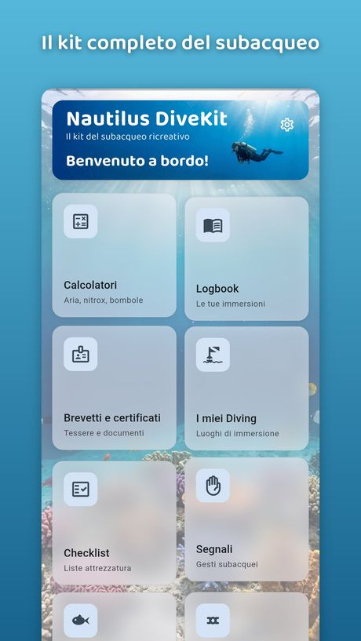
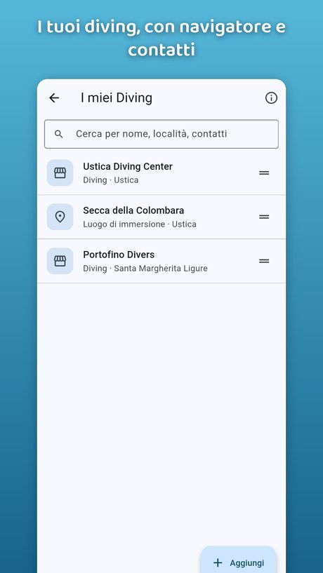
The whole diver's kit in a single app
Dive log, certifications, calculators, marine life, hand signals, knots and more. Free, no ads, no account. And it works where there is no signal.
Free on Android and iPhone. No in-app purchases.
What is inside
Ten sections, all ready to use: nothing else to download, nothing to set up.
Dive logbook
Every dive with depth, bottom time, gear, buddy and photos. Statistics build themselves and the logbook exports to PDF.
Certifications
Certification cards, medical certificate, insurance, tank inspection. The app warns you before a document expires.
Calculators
Air consumption and gas planning, nitrox (MOD and pO₂), equivalent air depth, transfer between cylinders, unit conversion.
Checklists
Your own lists — boat dive, trip, night dive — built from an illustrated catalogue.
Marine life
307 cards with photo, scientific name, where the animal really lives and how to behave. 23 regions of the world on a tappable map.
Hand signals
66 signs, each one photographed and sorted by category: communication, emergency, direction, animals.
Sailor's knots
Nine knots that are genuinely useful on a boat, explained step by step with images.
My dive centres
Dive shops and dive sites worth remembering: contacts, services, GPS. From there you navigate, call or write with one tap.
Dive buddies
The address book of the people you meet around the world: contacts, socials, where you met.
Online resources
Marine weather, tides, reference sites: a ready-made catalogue you can extend.
Why it is different
- Genuinely free: no subscription, no paid features
- No advertising, anywhere
- No sign-up: open it and use it
- Works without internet, always
- Your data stays on your phone: we do not collect it, see it or sell it
- Full backup in a single file, so you can change phone without losing anything
A look inside
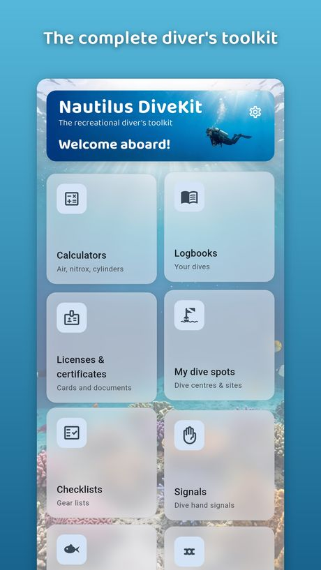
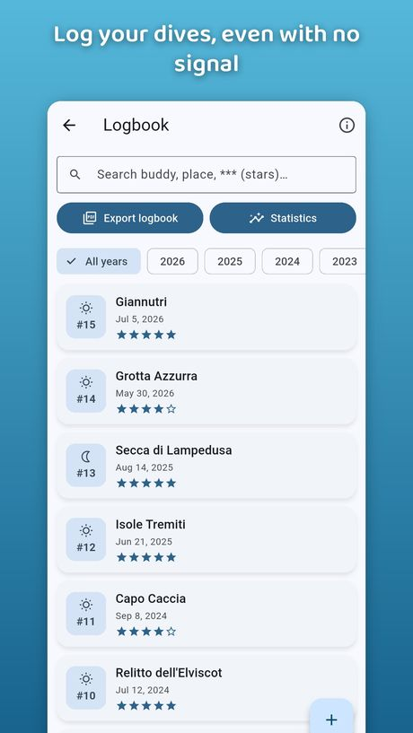
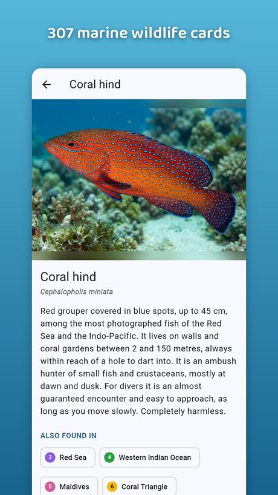
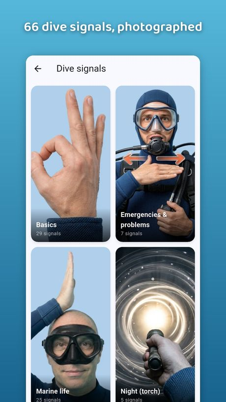
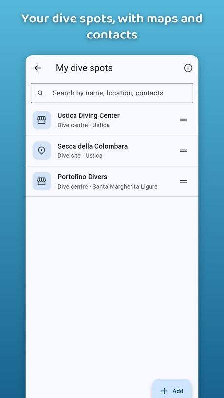
Todo el kit del buceador en una sola app
Cuaderno, titulaciones, calculadoras, fauna, señales, nudos y mucho más. Gratis, sin publicidad y sin cuenta. Y funciona donde no hay cobertura.
Gratis en Android y iPhone. Sin compras dentro de la app.
Qué hay dentro
Diez secciones, todas listas: nada más que descargar, nada que configurar.
Cuaderno de buceo
Cada inmersión con profundidad, duración, equipo, compañero y fotos. Las estadísticas se calculan solas y la bitácora sale en PDF.
Titulaciones
Títulos, certificado médico, seguro, revisión de botellas. La app te avisa antes de que caduque un documento.
Calculadoras
Consumo de aire y autonomía, nitrox (MOD y pO₂), profundidad equivalente al aire, trasvase entre botellas, conversión de unidades.
Listas de equipo
Tus propias listas — barco, viaje, nocturna — creadas a partir de un catálogo ilustrado.
Fauna marina
307 fichas con foto, nombre científico, dónde vive de verdad el animal y cómo comportarte. 23 áreas del mundo en un mapa táctil.
Señales de buceo
66 gestos fotografiados uno a uno y ordenados por categoría: comunicación, emergencia, dirección, animales.
Nudos marineros
Nueve nudos realmente útiles a bordo, explicados paso a paso con imágenes.
Mis centros de buceo
Centros y puntos de inmersión que quieres recordar: contactos, servicios, GPS. Desde ahí navegas, llamas o escribes con un toque.
Compañeros de buceo
La agenda de la gente que conoces por el mundo: contactos, redes sociales, dónde os conocisteis.
Recursos en línea
Meteorología marina, mareas, webs de referencia: un catálogo ya preparado que puedes ampliar.
Por qué es diferente
- Gratis de verdad: sin suscripción y sin funciones de pago
- Sin publicidad, en ninguna parte
- Sin registro: la abres y la usas
- Funciona sin internet, siempre
- Tus datos se quedan en tu teléfono: no los recogemos, no los vemos, no los vendemos
- Copia de seguridad completa en un solo archivo, para cambiar de móvil sin perder nada
Así se ve
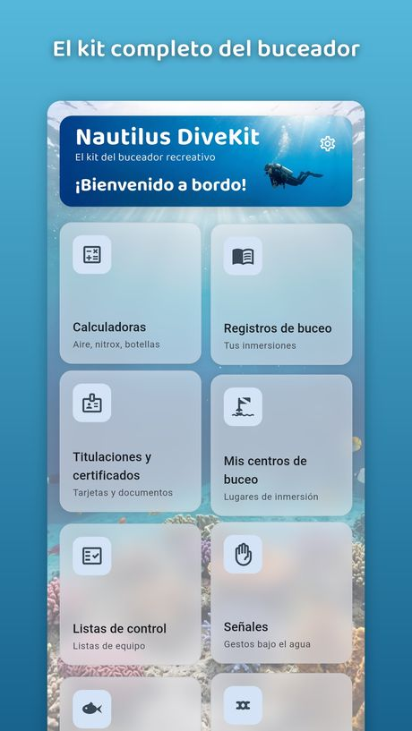
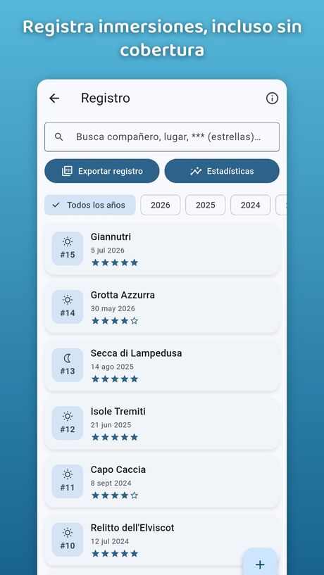
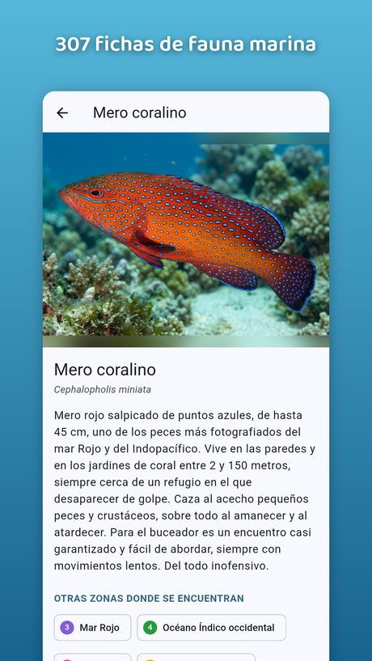
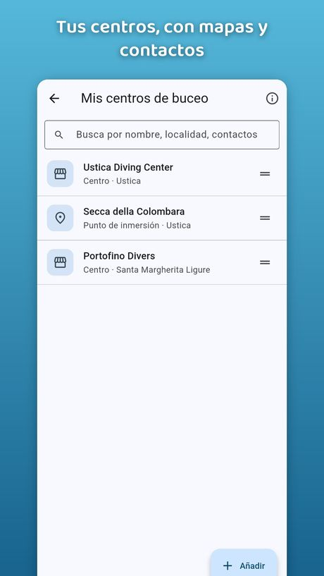
Tout le kit du plongeur dans une seule application
Carnet, brevets, calculateurs, faune, signes, nœuds et bien plus. Gratuite, sans publicité ni compte. Et elle fonctionne là où il n'y a pas de réseau.
Gratuite sur Android et iPhone. Aucun achat intégré.
Ce qu'il y a dedans
Dix rubriques, toutes prêtes : rien d'autre à télécharger, rien à configurer.
Carnet de plongée
Chaque plongée avec profondeur, durée, matériel, binôme et photos. Les statistiques se calculent seules et le carnet s'exporte en PDF.
Brevets et certificats
Brevets, certificat médical, assurance, requalification des blocs. L'application te prévient avant l'expiration.
Calculateurs
Consommation d'air et autonomie, nitrox (PMU et pO₂), profondeur équivalente à l'air, transvasement entre blocs, conversion d'unités.
Listes de matériel
Tes propres listes — bateau, voyage, plongée de nuit — composées à partir d'un catalogue illustré.
Faune marine
307 fiches avec photo, nom scientifique, aire de répartition réelle et conduite à tenir. 23 régions du monde sur une carte tactile.
Signes de plongée
66 gestes photographiés un par un et classés par catégorie : communication, urgence, direction, animaux.
Nœuds marins
Neuf nœuds vraiment utiles à bord, expliqués étape par étape avec des images.
Mes centres de plongée
Les centres et les sites à retenir : contacts, services, GPS. De là tu lances la navigation, tu appelles ou tu écris d'un geste.
Binômes et amis
Le répertoire des personnes rencontrées aux quatre coins du monde : contacts, réseaux, lieu de rencontre.
Ressources en ligne
Météo marine, marées, sites de référence : un catalogue déjà prêt, que tu peux compléter.
Pourquoi elle est différente
- Vraiment gratuite : aucun abonnement, aucune fonction payante
- Aucune publicité, nulle part
- Aucune inscription : tu ouvres et tu t'en sers
- Fonctionne sans internet, toujours
- Tes données restent sur ton téléphone : nous ne les collectons pas, ne les voyons pas et ne les vendons pas
- Sauvegarde complète dans un seul fichier, pour changer de téléphone sans rien perdre
Un aperçu
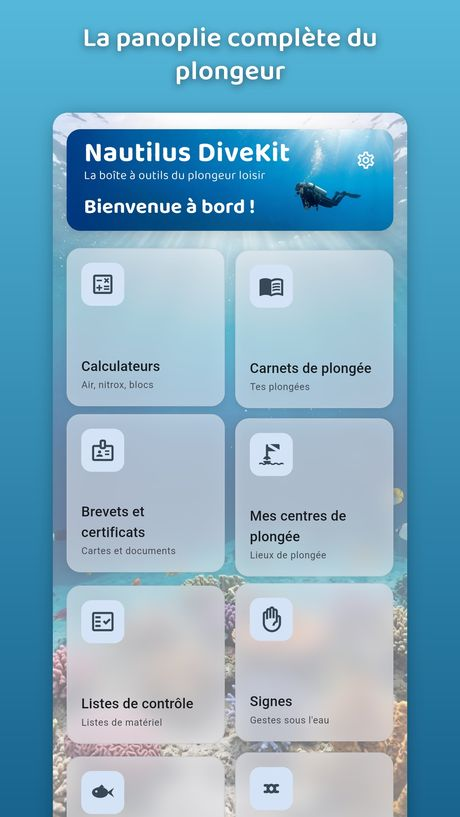
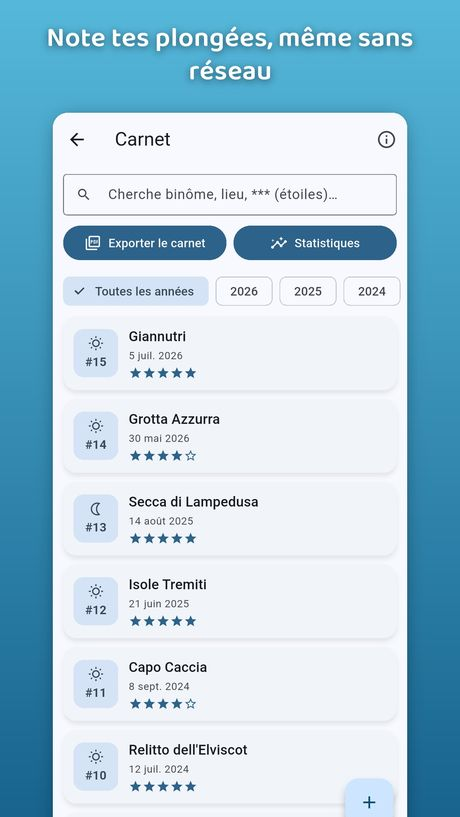
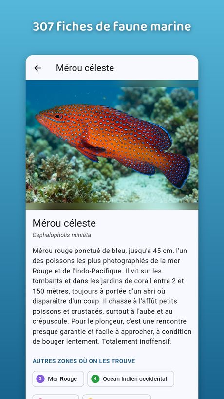
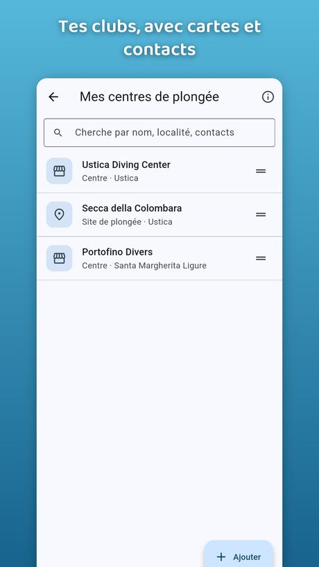
Das ganze Taucher-Kit in einer einzigen App
Logbuch, Brevets, Rechner, Meerestiere, Tauchzeichen, Knoten und mehr. Kostenlos, ohne Werbung und ohne Konto. Und es funktioniert auch ohne Empfang.
Kostenlos für Android und iPhone. Keine In-App-Käufe.
Was drin ist
Zehn Bereiche, alle sofort nutzbar: nichts nachzuladen, nichts einzurichten.
Tauchlogbuch
Jeder Tauchgang mit Tiefe, Dauer, Ausrüstung, Buddy und Fotos. Die Statistik entsteht automatisch, das Logbuch geht als PDF raus.
Brevets und Dokumente
Brevets, ärztliches Attest, Versicherung, Flaschen-TÜV. Die App meldet sich, bevor ein Dokument abläuft.
Tauchrechner
Luftverbrauch und Reichweite, Nitrox (MOD und pO₂), äquivalente Lufttiefe, Umfüllen zwischen Flaschen, Einheitenumrechnung.
Checklisten
Eigene Listen — Bootstauchgang, Tauchreise, Nachttauchgang — aus einem bebilderten Katalog zusammengestellt.
Meerestiere
307 Steckbriefe mit Foto, wissenschaftlichem Namen, tatsächlichem Verbreitungsgebiet und richtigem Verhalten. 23 Regionen auf einer Karte.
Tauchzeichen
66 Handzeichen, einzeln fotografiert und nach Kategorien sortiert: Verständigung, Notfall, Richtung, Tiere.
Seemannsknoten
Neun Knoten, die an Bord wirklich helfen, Schritt für Schritt mit Bildern erklärt.
Meine Tauchbasen
Basen und Tauchplätze zum Merken: Kontakte, Angebot, GPS. Von dort Navigation starten, anrufen oder mailen — mit einem Fingertipp.
Tauchpartner
Das Adressbuch der Menschen, die du weltweit kennenlernst: Kontakte, soziale Netzwerke, Ort des Kennenlernens.
Online-Quellen
Seewetter, Gezeiten, Nachschlagewerke: ein fertiger Katalog, den du erweitern kannst.
Warum sie anders ist
- Wirklich kostenlos: kein Abo, keine kostenpflichtigen Funktionen
- Keine Werbung, nirgends
- Keine Anmeldung: öffnen und loslegen
- Funktioniert immer, auch ohne Internet
- Deine Daten bleiben auf dem Handy: wir sammeln sie nicht, sehen sie nicht und verkaufen sie nicht
- Vollständige Sicherung in einer einzigen Datei — Handywechsel ohne Datenverlust
So sieht sie aus
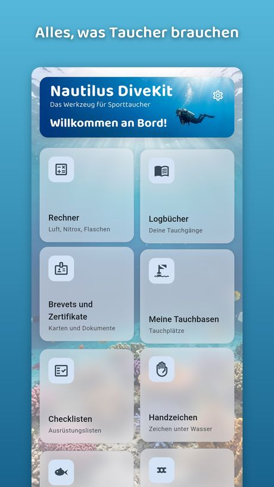
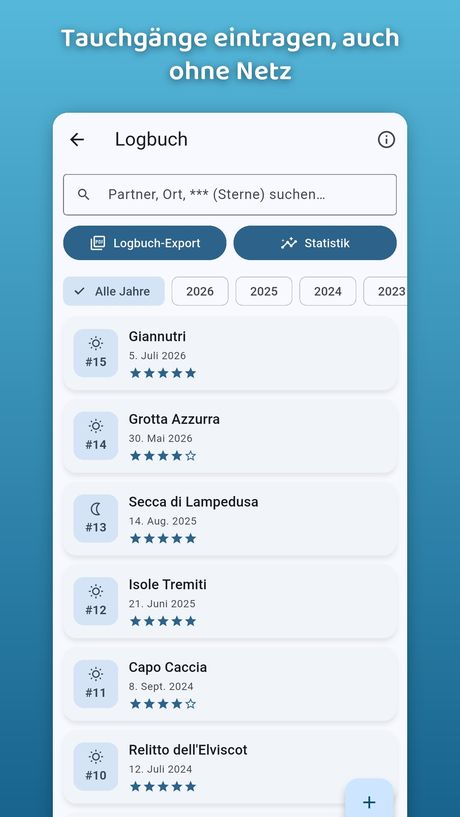
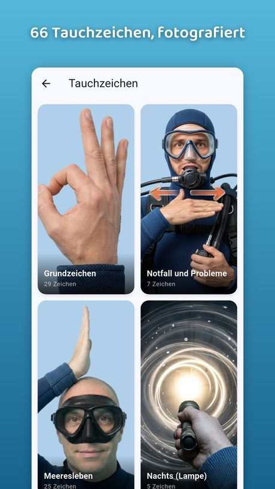
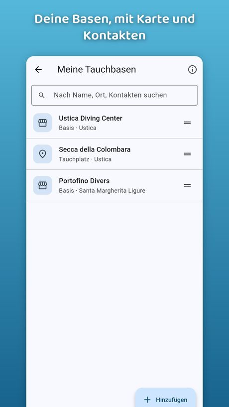
Todo o kit do mergulhador numa só aplicação
Diário, brevês, calculadoras, fauna, sinais, nós e muito mais. Grátis, sem publicidade e sem conta. E funciona onde não há rede.
Grátis para Android e iPhone. Sem compras na aplicação.
O que está lá dentro
Dez secções, todas prontas: nada para descarregar à parte, nada para configurar.
Diário de mergulho
Cada mergulho com profundidade, duração, equipamento, companheiro e fotografias. As estatísticas fazem-se sozinhas e o diário sai em PDF.
Brevês e certificados
Brevês, atestado médico, seguro, inspecção das garrafas. A aplicação avisa-te antes de um documento caducar.
Calculadoras
Consumo de ar e autonomia, nitrox (MOD e pO₂), profundidade equivalente ao ar, transfega entre garrafas, conversão de unidades.
Listas de equipamento
As tuas listas — barco, viagem, mergulho nocturno — criadas a partir de um catálogo ilustrado.
Fauna marinha
307 fichas com fotografia, nome científico, onde vive realmente o animal e como te comportares. 23 áreas do mundo num mapa táctil.
Sinais de mergulho
66 gestos fotografados um a um e organizados por categoria: comunicação, emergência, direcção, animais.
Nós marinheiros
Nove nós mesmo úteis a bordo, explicados passo a passo com imagens.
Os meus centros
Centros e pontos de mergulho para guardar: contactos, serviços, GPS. Daí arrancas a navegação, ligas ou escreves com um toque.
Companheiros
A agenda das pessoas que conheces pelo mundo: contactos, redes sociais, onde se conheceram.
Recursos online
Meteorologia marítima, marés, sites de referência: um catálogo já preparado, que podes alargar.
Porque é diferente
- Mesmo gratuita: sem subscrição e sem funções pagas
- Sem publicidade, em lado nenhum
- Sem registo: abres e usas
- Funciona sem internet, sempre
- Os teus dados ficam no telemóvel: não os recolhemos, não os vemos e não os vendemos
- Cópia de segurança completa num único ficheiro, para mudar de telemóvel sem perder nada
Um olhar por dentro
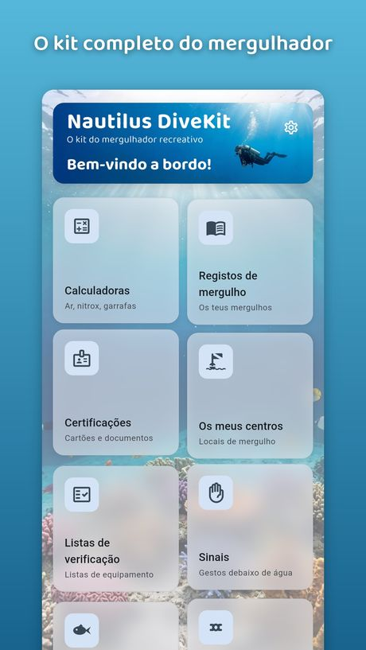
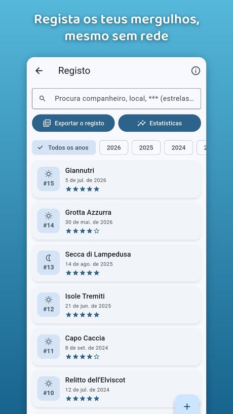
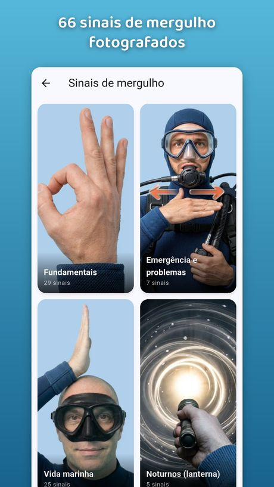